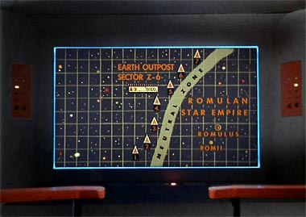
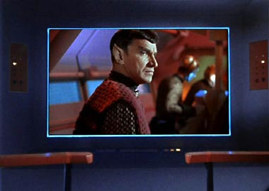
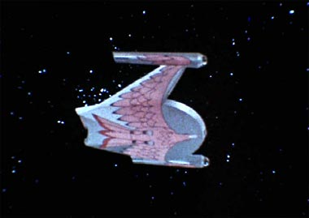
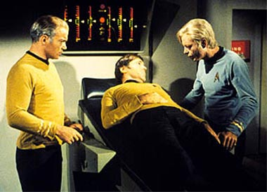
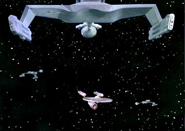
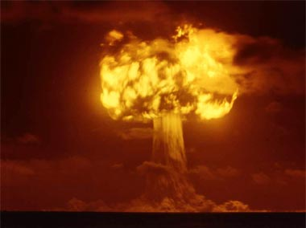
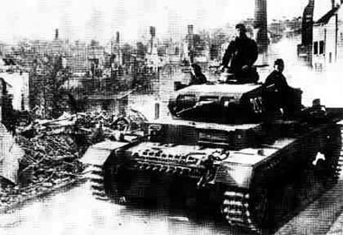
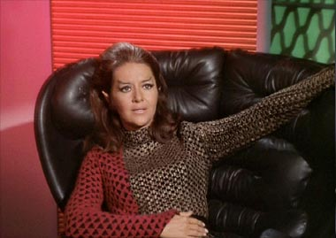
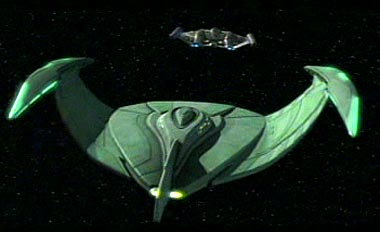

|

Publicado por meio da
Incubadora do Trek
Brasilis

Romulanos em Enterprise?
H alguma
chance de colocar esse aliengenas no sculo 22 sem violar tudo que
conhecamos antes sobre deles? Saiba a resposta

|
Devido ao fato de a nova srie de Jornada nas Estrelas, Enterprise, se passar cerca de 100 anos antes das aventuras de Kirk e sua tripulao da Srie Clssica, o tpico "continuidade" e a relacionada questo de "canonicidade" tm estado em alta nas discusses entre os fs, sejam elas realizadas no mundo real ou no virtual, sobre as histrias de Archer e seus comandados. Um assunto especialmente crtico sobre uma possvel participao dos Romulanos em Enterprise. O motivo simples: muitos fs querem ver os Romulanos em Enterprise, mas por outro lado tambm no querem que tal presena venha a ferir a elementos estabelecidos anteriormente no franchise, notadamente no episdio "Balance of Terror", da Srie Clssica. O Romulanos foram introduzidos antes mesmo dos Klingons na Srie Clssica, mas foram utilizados de forma muito menos freqente, naquela e nas sries posteriores. Em particular, a sua utilizao nos filmes de cinema de Jornada tem sido minscula at agora, e mesmo o dcimo filme de A Nova Gerao, "Nemesis", no deve cobrir essa diferena (apesar de contar com eles em sua trama). Por terem sido usados relativamente pouco ao longo dos mais de 35 anos do franchise e por carregarem uma caracterstica de recluso (entre outras), os Romulanos so considerados fs muito misteriosos e interessantes. Sua conexo com os Vulcanos, a questo da guerra Terra-Romulana e a possibilidade desta levar fundao da Federao Unida dos Planetas fazem dos Romulanos um literal "tem que ter" em Enterprise. A questo : Podemos ter Romulanos sem violar a continuidade estabelecida? Esse artigo tem o objetivo de colocar em perspectiva a questo, trazendo tona as restries que devem ser satisfeitas e discutindo-as em termos de sua validade original e atual para fins da produo de Enterprise. Para isso, faremos logo adiante uma anlise, no que diz respeito ao tema, do episdio "Balance of Terror" (a principal fonte cannica para esta questo), uma discusso de dois tpicos associados fundamentais ("Os Romulanos de fato no tinham dobra espacial na poca de 'Balance of Terror'?" e " possvel um Imprio Estelar Romulano e uma guerra com a Terra sem dobra?") e, finalmente, a resposta pergunta que motivou o artigo: os Romulanos em Enterprise podem respeitar a continuidade? O artigo se encerra com um apndice, mostrando uma mini-cronologia que pode ser til nas discusses sobre os Romulanos em Jornada. Boa leitura!
Discutindo "Balance of Terror" (Srie Clssica)
Uma sinopse informal Durante patrulha ao longo da Zona Neutra Romulana, a Enterprise chamada a responder a um sinal de socorro enviado por postos de observao terrestres na fronteira Romulana. Ao chegar l, Kirk e cia. descobrem que os postos foram destrudos, obviamente pelos Romulanos.  A partir da comea um jogo de gato e rato onde a Enterprise comea a perseguir a nave inimiga, que possui um trunfo aparentemente decisivo, um escudo de invisibilidade permitindo que esta seja localizada apenas pelos sensores de movimento da nave da Federao. Este episdio me lembra um antigo filme sobre a Segunda Guerra Mundial (infelizmente no me lembro o nome) onde um destrier americano persegue um submarino alemo aps este ter atacado um comboio de suprimentos dos aliados. (O episdio bastante adaptado para se moldar em tal situao do mundo real. Um fato notvel a necessidade de ordenar que a seo de armamentos da Enterprise abra fogo em uma situao de batalha, um fato que no se repete ao longo da srie, onde Sulu pessoalmente cuida do disparo das armas. Provavelmente tal estratgia foi utilizada exclusivamente em "Balance of Terror", para que Spock pudesse salvar Stiles e a prpria Enterprise mais tarde. Neste episdio, apesar de ordens para o fogo dos feisers serem dadas, os efeitos pticos mostrados so os dos torpedos fotnicos.) Em "Balance of Terror", temos todos os elementos de uma caada deste tipo, em que a "embarcao de superfcie" Enterprise precisa deter a fuga do "submarino" Romulano. Voltando ao episdio, nele temos de um lado o capito Kirk, que pela primeira vez na srie precisa tomar decises que vo afetar no s a sua tripulao, mas tambm a poltica da Federao, uma vez que suas atitudes podem significar o inicio de um novo conflito interplanetrio entre os dois povos. Sem condies de se comunicar com o comando da Frota Estelar devido distncia da Zona Neutra ele precisa decidir o que fazer, atacar e destruir a nave agressora ou deix-la partir, sendo que qualquer uma das duas alternativas pode ser o estopim de uma nova guerra. Para complicar ainda mais as coisas, Kirk ainda precisa lidar com uma crise de relacionamento em seu comando quando se descobre que os Romulanos e os Vulcanos so fisicamente idnticos, o que causa desconfianas sob a lealdade do primeiro-oficial Spock, principalmente por parte do tenente Stiles (Paul Comi), um descendente direto de homens que teriam perecido na guerra anterior entre humanos e Romulanos. Do outro lado, como adversrio de Kirk, temos o falecido Mark Lenard (que mais tarde viria a interpretar Sarek, o pai de Spock) como o comandante Romulano (sem nome em tela), que precisa fazer de tudo para retornar sua terra natal, mas que no fim acaba sendo vencido por Kirk e sua trupe.  Talvez seja aqui que possamos ver (pela primeira vez) de forma mais aguda as principais caractersticas dos trs personagens que formariam o trip da srie, com o capito Kirk assumindo o papel do brilhante, determinado e herico comandante que ir liderar seus homens rumo a vitria, o escudeiro Spock, racional e lgico (que considera o ataque a medida mais lgica a ser tomada, alm de no se abater com o preconceito de Stiles e salvar a vida dele ao final) e sua anttese, McCoy, que sempre tem uma contribuio emocional e apaixonada a dar (totalmente contrrio guerra, mas apoiando Kirk em suas difceis decises em uma das cenas mais inesquecveis da histria do franchise).
Colocando o episdio em perspectiva quanto mitologia "Balance of Terror" estabelece alguns pontos que se tornariam fundamentais na "mitologia" de Jornada: - Introduz os Romulanos, uma raa com profundo apelo para os fs e que viria a ser recorrente em todas as sries de Jornada nas Estrelas desde ento. Os Klingons, que acabaram virando a bola da vez em matria de "grandes inimigos" da Federao, s vieram a aparecer no episdio "Errand of Mercy" (com o saudoso John Colicos no papel de Kor), quase ao fim da primeira temporada da Srie Clssica. (Isso aconteceu primariamente por questes de oramento, uma vez que a maquiagem dos Romulanos era mais cara do que a dos Klingons -- por isso os "primos dos Vulcanos" foram pouco usados na Srie Clssica. Foram vistos novamente s em "The Enterprise Incident", ponto alto da famigerada terceira temporada da Srie Clssica. A "participao" dos Romulanos em "The Deadly Years", da segunda temporada, se resume essencialmente na reutilizao dos efeitos pticos de "Balance of Terror".) - Apresenta os Romulanos com uma faceta diferente daquela que aprendemos a ver em A Nova Gerao e alm, onde eles so quase sempre retratados como um povo sem princpios, disposto a qualquer coisa para prejudicar os interesses da Federao. Em "Balance of Terror" o que vemos neles so fortes indcios de honra, carter e dignidade, embora guiados por uma noo de valores diferentes da Federao, pois, como Spock disse, para eles a guerra imperativa. Os Romulanos vistos aqui tem muito das caractersticas atribudas aos Klingons a partir de A Nova Gerao e alm. O curioso que os Klingons trilharam aparentemente o caminho inverso nessa "transio" da Srie Clssica para A Nova Gerao. - Define estes Romulanos como sendo uma cultura marcial. O autor da histria, Paul Schneider, baseou seus antagonistas claramente na cultura Romana, como se pode ver tanto pela filosofia, como pelos nomes empregados, ttulos etc. - Estabelece que houve um violento conflito entre a Terra (no a Federao) e os Romulanos mais de cem anos antes dos fatos ocorridos em "Balance of Terror", em 2266. As melhores conjecturas atuais apontam para uma Guerra de 2156 a 2160, sendo a Federao fundada logo em seguida, em 2161 (para efeito de comparao, a primeira temporada da srie Enterprise se passa em 2151 e cada temporada de uma srie de Jornada equivale a um ano de tempo corrido dentro do universo do franchise). - Estabelece tambm uma Zona Neutra Romulana (regio do espao que separa o espao da Federao e o do Imprio Estelar Romulano, baseado nos planetas Romulus e Remus, apesar de parte do texto do episdio sugerir que ela separa o espao Romulano do resto do Universo, o que parece um cenrio por demais idealizado), que foi criada ao final do conflito e violada pela primeira vez em "Balance of Terror". - Os Romulanos so descendentes de uma dissidncia dos antigos Vulcanos. - Os Romulanos no possuam um dispositivo de invisibilidade durante o conflito com a Terra (em particular bem conhecido o fato de que as naves Romulanas tm Aves de Rapina pintadas em seus cascos -- ou um equivalente Romulano que pode ser interpretado como tal).  (O posterior episdio "The Enterprise Incident" indica que o "dispositivo de camuflagem" daquele episdio um aperfeioamento do "dispositivo de invisibilidade" de "Balance of Terror". Observem, entretanto, que eles so referidos da mesma maneira na srie, como "cloaking device", mas claramente a sua capacidade diferente. Tal evoluo da tecnologia Romulana que deve ter forado a Federao a dar a Kirk a misso de roubar o dispositivo em "The Enterprise Incident".) (A informao de que os Klingons trocaram a sua tecnologia de dobra pela camuflagem Romulana no-cannica e fruto de especulao de fs ao longo dos anos.) - O tratado assinado ao final do conflito Terra-Romulano foi estabelecido por rdio subespacial, sem comunicao visual. As partes combatentes jamais viram os rostos umas das outras (no melhor do conhecimento de Spock). (Este ponto o mais crtico. Introduzido para preparar a revelao do "parentesco" entre os Vulcanos e os Romulanos e explorar o ngulo do preconceito de Stiles, tal informao de difcil aceitao. Como em um conflito militar nunca um governo combatente teve acesso a um corpo da espcie do seu oponente, fruto de escaramuas em terra, ar, mar ou no espao sideral? Tal idia parece apontar para uma noo simplista de um "modelo de guerra" em que os adversrios ficam isolados em seus respectivos QGs lanando bombas ou equivalentes de forma remota. Algumas "teorias de fs" defendem que uma vez que a prtica de auto-destruir as suas naves em caso de derrota era comum entre os Romulanos, corpos no seriam encontrados, o que parece extremamente improvvel tambm. Outros fs tendem a especular que certas figuras-chave do governo tanto da Terra quanto de Vulcano saberiam de tal informao, mas a esconderam para no fomentar a parania entre os seus dois povos ou algo parecido.)
Dois tpicos fundamentais: Os Romulanos de fato no tinham dobra espacial na poca de "Balance of Terror"? Uma das questes mais controversas levantadas neste episdio se naquela altura os Romulanos tinham ou no velocidade de dobra. Tudo por causa de uma frase dita por Scott ao capito Kirk durante a reunio para discutir como tratar o problema Romulano. Kirk perguntou: "Podemos confront-los com uma razovel possibilidade de vitria?" E obteve do engenheiro-chefe da Enterprise a seguinte resposta: "Com certeza, a fora deles simples impulso". A partir da muitos assumem que os Romulanos no dominavam a tecnologia da dobra espacial naquela poca. Particularmente acho difcil de acreditar nessa idia, e por conta disso andei vasculhando algo entre os episdios da Srie Clssica. Embora no tenha encontrado nada to taxativo como um Romulano ordenando uma dobra espacial, encontrei algo no mnimo interessante em um certo episdio da segunda temporada da srie. Analisando os eventos de "The Deadly Years" Neste episdio, Kirk, Spock e McCoy adquirem uma doena que acelera o processo de envelhecimento e, por conta disso, com Kirk incapacitado e com Spock indo pelo mesmo caminho, o comodoro Stocker, um burocrata que est a bordo da Enterprise como passageiro com destino a uma base estelar, acredita que deve assumir o comando no lugar de Kirk, e assim o faz, temendo pela vida dos trs que esto doentes. Ele acredita que nas instalaes de uma base estelar a doena dos trs poder ser mais bem tratada. Ele ordena a Sulu e Chekov um curso atravs da Zona Neutra, por ser este o caminho mais rpido, apesar dos protestos dos dois oficiais.  Obviamente os Romulanos atacaram a Enterprise. Apesar de Stocker ser apresentado como um oficial inexperiente, acredito que ningum chega a um posto de comando na Frota Estelar sem saber que uma nave da classe Constitution tem capacidade de dobra espacial, portanto, a partir desta concluso totalmente bvia, podemos criar alguns cenrios lgicos. - Se Stocker tinha tanta pressa a ponto de atravessar a Zona Neutra ele tinha tambm razes para fazer isso em dobra. Primeiro por que obviamente mais rpido, e segundo, se o fizesse, mesmo que os Romulanos pudessem detectar a Enterprise, eles no poderiam alcan-la e sequer atingi-la, "uma vez que todos sabemos que as naves Romulanas no tm capacidade de dobra espacial" (no mesmo?). - Mesmo que por algum motivo (que definitivamente no parece existir) Stocker tivesse entrado na Zona Neutra em "simples fora de impulso", nada impediria a Enterprise de entrar em dobra assim que as naves Romulanas aparecessem nos sensores e deixar seus perseguidores comendo poeira. - Algum que se lembre do episdio pode dizer, "Mas quando voltou ao comando Kirk fez isso, ordenou dobra oito e deixou os Romulanos na estrada". E verdade, mas a eu diria: para poder ter certeza de que a Enterprise teria tempo de se afastar ele utilizou um ardil (uma repetio de "The Corbomite Maneuver") que fez com que os Romulanos se afastassem da nave em vez de prosseguirem com o ataque e s ento ordenou a velocidade de dobra oito. Por que os Romulanos precisavam ser ludibriados se no podiam perseguir uma nave em dobra espacial? - Se a Enterprise pode entrar em dobra e as naves Romulanas no, bastaria apenas um "fator de dobra um" para tranqilamente sair do alcance das naves Romulanas caso elas s pudessem se mover em "simples impulso", tornando desnecessria a dobra oito ordenada por Kirk. - Eu ainda acrescentaria um ltimo ponto: pode um torpedo de plasma Romulano disparado de uma nave cruzando o espao em fora de impulso atingir uma outra navegando em velocidade de dobra? Esta uma questo que provavelmente daria um livro sobre fsica, ento vamos fugir dela, pois no creio ser necessria para demonstrar o meu ponto de vista. Colocados estes fatores, podemos concluir que a nica maneira de as naves Romulanas poderem alcanar a USS Enterprise desenvolver a mesma velocidade que ela. Logo, elas precisam ter capacidade de dobra. Podemos acrescentar que o nico motivo para que Kirk tivesse que criar um subterfgio, de modo a fazer com as naves Romulanas se afastassem da Enterprise. Isso pode ser entendido da seguinte maneira: se ele simplesmente ordenasse a dobra com as naves Romulanas to perto, elas ainda seriam capazes de persegui-la por algum tempo, o que indica que estas naves podiam alcanar velocidades prximas da Enterprise, ainda que pudessem sustent-la por um tempo menor que ela. A anlise das entrelinhas aponta claramente para a concluso de que os Romulanos j tinham capacidade de dobra na poca! (Propositadamente deixei de lado "The Enterprise Incident", pois com certeza o design claramente Klingon das naves usadas pelos Romulanos neste episdio poderia suscitar (inevitveis) declaraes do tipo "Os Romulanos s tm a velocidade de dobra por que trocaram com os Klingons pela tecnologia de camuflagem", mas em "The Deadly Years" as naves que vemos atacando a Enterprise so claramente do mesmo tipo que de ave de rapina que vemos em "Balance of Terror", que portanto devem ter as mesmas caractersticas.)  Alm dos eventos mostrados em "The Deadly Years", temos outros argumentos de ordem ainda mais prtica. Um fator importante que devemos considerar o porqu do surgimento da velocidade de dobra em Jornada. Sem ela a srie simplesmente no poderia existir, uma vez que as distncias com as quais a USS Enterprise tem que lidar so inimaginveis, tornando impossveis viagens interestelares sem algum tipo de mtodo para se viajar mais rpido que a velocidade da luz. Alm do que, as leis da relatividade restrita nos dizem que o tempo passaria mais lentamente para um grupo de pessoas viajando a bordo de uma nave espacial em velocidades prximas da luz do que para aqueles que foram deixados para trs, digamos na Terra. Por exemplo, imaginemos que a Federao no domine a tecnologia da dobra espacial e envie uma nave em uma viagem de cinco anos de explorao cientfica. Se esta espaonave percorrer todo o tempo em uma velocidade prxima velocidade da luz e imaginando que ela leve cinco anos indo e depois outros cinco anos voltando, teriam, de acordo com as leis da relatividade, se passado 25.000 mil anos na Terra. Acho que no preciso descrever os problemas que isso causaria a criao, manuteno e administrao de um vasto imprio interestelar com naves indo e vindo a todo o momento de todo lugar. Isto se aplica no s Federao, mas tambm aos Klingons, Ferengis, Borgs, e pasmem, aos prprios Romulanos. A velocidade de dobra resolve o problema no s das distncias, mas tambm da sincronizao do tempo-espao, e absolutamente inestimvel em Jornada. Fica claro tanto pelas limitaes das viagens subluz quanto pelas das leis da relatividade que os Romulanos tinham que ter a dobra espacial! Voltando a "Balance of Terror" -- nossa principal fonte de consulta para este artigo -- o que diabos ento Scott estava querendo dizer? Atentando apenas aos fatos vamos rever o que disseram Kirk e Scotty: Kirk: "Podemos confront-los com uma razovel possibilidade de vitria?" Scotty: "Com certeza, a fora deles simples impulso". Ora, Scott e a tripulao da Enterprise no tinham informaes suficientes para afirmar que o Imprio Romulano no dominava a tecnologia de dobra espacial, assim como no sabiam do escudo de invisibilidade e nem mesmo das armas de plasma Romulanas. Ento, com base em que ele concluiu aquilo? Com base na informao de sensores que podiam detectar apenas o movimento da nave inimiga que se dava em impulso? Tentando entender o raciocnio de Scott: por que uma nave que est sendo perseguida no entra em dobra espacial enquanto pode e se manda? "Logicamente porque eles no tm motores de dobra", Scott deve ter concludo. Parece brincadeira, mas alm desta especulao no h em todo o episdio nada que possa comprovar que os Romulanos desconheciam a tecnologia, e o mximo que se podia dizer com certeza era que eles no podiam us-la naquele momento ou que aquela nave em particular no possua dobra espacial. No episdio Spock diz ao capito Kirk que "Uma tela de invisibilidade teoricamente possvel usando uma 'toro seletiva da luz', mas o custo em energia seria altssimo. Podem ter solucionado". Ora, Spock s pde ver o que acontecia na ponte da nave Romulana por um breve momento, mas ns pudemos acompanhar passo a passo tudo o que acontecia l e sabemos que a situao da energia na nave Romulana era de fato crtica. Especulando, a nave Romulana tinha uma misso clara que era de testar sua superioridade contra as defesas da Federao, em particular os postos avanados, mas o tratado assinado h cem anos dizia claramente que atravessar a Zona Neutra seria considerado um ato de guerra. Os Romulanos nunca foram bobos e no iriam iniciar um conflito ser ter certeza de terem alguma superioridade. Ento (provavelmente) os Romulanos enviaram a nave Zona neutra at um dos postos Romulanos onde ela seria reabastecida e, ento, usando seu escudo de invisibilidade, esta nave entraria no espao da Federao e atacaria os postos de surpresa e depois retornaria ao mesmo posto, onde reabasteceria uma segunda vez e depois seguiria tranqilamente para casa em velocidade de dobra com seu relatrio. Usando uma parada para reabastecimento ainda na borda da fronteira, mas dentro do espao Romulano, a nave poderia usar os motores de impulso para uma viagem relativamente curta at os postos da Federao o que tornaria desnecessrio o uso da dobra espacial, permitindo que toda a travessia fosse efetuada em modo furtivo (onde fica clara a razovel hiptese de que a utilizao da dobra espacial e da camuflagem seriam tecnologias mutuamente exclusivas para aquela nave). Tudo saiu como planejado e a nave atacou os postos dois, trs e quatro com sucesso e ento tomou o curso de volta para espao Romulano. Infelizmente para eles, exatamente quando se preparavam para voltar, a USS Enterprise, que patrulhava a Zona Neutra, conseguiu localiz-los e a esta altura a Ave de Rapina havia exaurido suas reservas e tinha apenas o combustvel necessrio para retornar ao espao Romulano em fora de impulso ou (talvez) precisasse desligar a camuflagem para poder entrar em dobra, o que os deixaria expostos ao maior alcance das armas da Enterprise. O comandante Romulano fez sua escolha, que era tentar se manter fiel ao plano original e chegar Zona Neutra. O fim da histria todo mundo j sabe, mas acho este cenrio absolutamente plausvel dentro do contexto que o prprio episdio apresenta. (Uma pequena variao desta teoria envolveria uma nave-me com dobra espacial que levaria e traria a nave da misso do citado posto Romulano. Neste caso a nave da misso no possuiria nenhuma capacidade de dobra.) Resumindo: no existe nenhuma informao explcita em "Balance of Terror" ou em qualquer outro segmento de Jornada que justifique a afirmao de que os Romulanos no possuam dobra espacial naquela poca. Por outro lado, o volume de informao cannica disponvel que aponta na direo contrria enorme e irrefutvel.
possvel um Imprio Estelar e uma guerra com a Terra sem dobra? (Existem outros obstculos cannicos?) A partir das concluses traadas at aqui, a resposta a isso simplesmente NO. No h nenhuma possibilidade de haver um Imprio Estelar Romulano, uma Frota Estelar e o tal conflito Terra-Romulus sem a dobra espacial, uma vez que as distncias a serem vencidas so impensveis sem uma maneira de viajar a velocidades muito maiores que a da luz, alm das j apresentadas questes da relatividade impostas. Apesar disso estar claro, vamos tocar ainda nos restantes pontos duvidosos de "Balance of Terror". Em "Balance of Terror", Spock diz entre outras coisas que "o conflito Terra-Romulano foi travado h mais de cem anos, para nossos padres atuais com armas atmicas primitivas em naves tambm primitivas". Para muitos, esta declarao, junto com a crena de que no houve uso de dobra espacial (que a nave de Archer possui) no conflito, sepulta as chances dos Romulanos aparecerem em Enterprise. O que no parece ser de fato verdade. Uma das questes quanto ao uso de armas nucleares no conflito Terra-Romulano, fato alegado por Spock no episdio "Balance of Terror". Mas em Enterprise vemos que a NX-01 j conta com torpedos e canhes de fase, dois tipos de armamento (armas nucleares versus canhes de fase/torpedos) considerados por muitos inconsistentes entre si. Mas Spock no entrou em detalhes sobre as armas usadas no conflito -- apenas informou que armas atmicas ainda eram usadas na ocasio, em uma guerra travada em "padres considerados ultrapassados" no tempo em que Kirk encontra os Romulanos. Os "canhes de fase" (ou torpedos) da Enterprise de Archer no podem de maneira alguma ser comparados aos bancos "feiser" (ou torpedos fotnicos) da Enterprise de Kirk por uma nica questo que no pode ser discutida: mais de cem anos os separam. Isto justifica a fala de Spock sobre "combate em padres mais primitivos". Alm disso, voltando s questes das armas atmicas, no creio que seria exagero presumir que elas poderiam sim ter sido usadas em tal conflito. Para examinar tal questo, vamos lembrar dos efeitos hoje conhecidos de uma exploso nuclear que esto descritos abaixo de forma resumida:  - Ondas de choque A extremamente rpida expanso dos materiais de uma bomba produz um impulso de altas presses, ou onda de choque, que se move rapidamente em vrias direes. No ar este fenmeno acompanhado por ventos muito fortes e de intensidades superiores s dos furaces. Os estragos so provocados quer pelo centro de altas presses, quer pelos ventos extremamente fortes que persistem mesmo depois do centro de altas presses desaparecer. - Efeitos trmicos As grandes temperaturas obtidas pela exploso nuclear resultam na formao de uma bola de fogo; uma massa de gs extremamente quente e incandescente. Para uma bomba de 10 kilotons, forma-se uma bola com cerca de 300 m de dimetro. - Efeitos climticos Conhecida como a teoria do inverno nuclear. De acordo com esta teoria, a detonao de menos da metade do arsenal conjunto dos EUA e da Rssia originaria p e fumaa na atmosfera suficiente para bloquear a entrada de luz solar durante vrios meses, particularmente no hemisfrio Norte. Destruiria as plantas e criaria um clima gelado at que a poeira se dispersasse. A camada de oznio tambm seria afetada, provocando assim uma maior entrada de radiao ultravioleta proveniente do Sol. Se a poeira persistisse, a vida na Terra iria acabar. - Radiao penetrante Alm da exploso e do calor libertado, uma exploso nuclear tem um efeito nico -- liberta radiao nuclear penetrante que diferente do calor. A natureza das radiaes e as vastas reas contaminadas por uma simples exploso fazem sem dvida com que o decaimento da radioatividade seja um efeito mortal das armas nucleares. Quando absorvida pelo corpo, a radiao nuclear provoca leses srias no organismo. - Emisso eletromagntica Uma exploso nuclear produz tambm uma fonte de emisso eletromagntica que capaz de sobrecarregar estaes eltricas, assim como queimar resistncias e capacitores. Uma exploso de capacidade de 10 megatons a pouca altitude pode destruir toda a capacidade de produzir e fornecer energia de uma dada regio ou pas, bem como colocar em pane sistemas eltricos variados. Analisando... Os trs primeiros efeitos so claramente descartados em uma possvel guerra travada entre naves em espao aberto, uma vez que a ausncia de atmosfera os inviabiliza. A radiao penetrante poderia causar danos fsicos srios s tripulaes das naves em disputa, mas a ltima alternativa que seria a mais interessante, uma vez que a exploso de um dispositivo nuclear poderia desabilitar, com seu "pulso eletromagntico", uma boa parte dos sistemas -- seno todos -- de uma nave que sofresse um ataque desse tipo de artefato (uma possibilidade seria utilizar um ataque inicial com "pulso eletromagntico" para abrir as linhas inimigas e depois fazer um assalto com armas "mais convencionais" -- de fato j temos hoje em dia no mundo real dispositivos que produzem exatamente esse efeito eletromagntico de uma bomba nuclear, sem uma exploso de uma bomba nuclear). O quanto esta arma pode ser efetiva discutvel, mas mesmo em "Balance of Terror" essas armas ainda existem, como vemos quando o comandante Romulano tenta um ardil para atingir a Enterprise de Kirk utilizando uma "antiga ogiva nuclear" -- mostrando que a tecnologia, apesar de ultrapassada, era conhecida dos Romulanos e mostrou-se perigosa mesmo para uma nave da classe Constitution (um ponto importante a ser realado). Tambm do lado da Federao e j no sculo 24, podemos em "Caretaker" (episdio-piloto de Voyager) assistir capit Janeway utilizar dispositivos de "Tri-Cobalto" para destruir a estao espacial do prprio "Guardio". Em teoria, estes seriam dispositivos nucleares. Dispositivos baseados em fisso-fuso-fisso do elemento Cobalto -- que se mostraram bem eficientes nesta ocasio. Tudo isto mostra ser possvel que algum tipo de torpedo (ou variante) da NX-01 fosse construdo para carregar uma ogiva nuclear (ou a bisneta de uma). Outra questo (dentro da fala "batalha com naves primitivas") que a NX-01 no foi construda para uma guerra e sim para uma misso de pesquisa. Ento quem disse que a guerra foi travada por naves iguais a ela? Aps anos de desenvolvimento (conforme vemos em "Broken Bow", episdio-piloto de Enterprise) era de se esperar que esta contasse com o que havia de mais moderno na poca, mas uma guerra um processo um pouco diferente. Quanto mais moderno, mais complicado, e quanto mais complicado, mais passivo de falhas e, principalmente, mais demorado para construir. Portanto, numa situao em que fosse preciso construir naves de combate em grande numero em um curto espao de tempo, muito provvel que se optasse por um projeto mais simples, privilegiando a quantidade. Exemplos disso existem na vida real. Na Segunda Guerra Mundial, apesar de serem muito mais modernos e eficientes, os panzers alemes no foram capazes de sustentar a "blitzkrieg", pois, apesar de muito bons quando em ao, eles eram difceis de consertar, sendo necessrios recolh-los de volta s fabricas para isso. Por outro lado, os tanques Sherman americanos, apesar de possurem uma blindagem e alcance inferiores, dependendo do modelo (um panzer tiger V atingia um alvo a 4 km), acabaram vencendo a guerra dos blindados porque eram mais fceis de consertar e principalmente porque foram construdos mais de 30.000 deles, contra 5.500 panzers alemes. Posso achar outros exemplos, mas acho desnecessrio.  Mesmo que no fosse este o caso, embora a Enterprise NX-01 possa ter parecido um pouco avanadinha (em termos de visual especialmente, se comparada Enterprise da Srie Clssica), ela na verdade no est nem aos ps das naves da classe Constitution (em um contexto "interno" ao universo do franchise). Com um interior extremamente apertado, com limitada capacidade de dobra, um teletransporte (fora uma ou outra forada de barra) ainda meio barro meio tijolo, sem um processador de alimentos sofisticado, sem tradutores universais de fato universais, usando um cabo com um gancho como "raio trator" (ou seja l que nome que eles do para aquilo) etc. Em "Broken Bow", por exemplo, o capito Archer tenta dar uns tirinhos nos Sulibans e para surpresa de todos no acerta um. ou no um ferro velho? Para mim esta NX-01 sob nenhum ponto de vista derruba a informao de Spock de que os equipamentos usados no conflito eram obsoletos. Pelo contrario, reafirma isso. Tal tecnologia ser fatalmente atualizada no curso da srie (j tivemos algumas melhoras), mas nunca chegar nem perto de uma Constitution. O assunto "os Romulanos tinham ou no dobra espacial e quando" j foi tratado exausto neste artigo (Spock no disse que eles no tinham e eu tambm no vou dizer). Apenas reafirmo que considero essa questo fora de discusso, pelos motivos j discutidos anteriormente. Eu ainda ousaria dizer que, se um povo pacifico como o Vulcano dominava a tecnologia, assim como a Terra, muito improvvel que os Romulanos no a dominassem. Por mais que no gostemos disso, a Histria nos mostra que muitas das principais conquistas tecnolgicas do mundo moderno tiveram por trs motivaes militares e sendo os Romulanos uma cultura marcial, em tese muito provvel que eles estivessem at mesmo frente dos outros tecnologicamente (talvez um motivo para uma aliana contrria a eles em primeiro lugar), e nesse contexto de uma guerra com linhas de frente a grandiosas distncias de seu mundo natal, o uso da dobra espacial imprescindvel. Spock diz tambm que "no havia comunicao visual de nave a nave, nenhum humano, Romulano ou aliado jamais viu um ao outro, o tratado negociado por rdio subespacial estabeleceu a Zona Neutra". J ouvi algumas pessoas comentarem que a NX-01 tendo comunicao visual, e acho que podemos presumir que os Romulanos talvez a tivessem tambm. Isso inviabilizaria o encontro dela com os Romulanos, segundo as leis "cannicas". Mas eu acho importante lembrar que mesmo que ambos os lados tivessem a capacidade de comunicao visual, necessrio que ambos os lados queiram faz-lo. O meu ponto aqui que podemos argumentar que a aparncia dos Romulanos (semelhante aos Vulcanos) poderia ser um fato desconhecido para Vulcanos e humanos, mas no para os prprios Romulanos (ver mais sobre isto no Apndice sobre Romulanos em Jornada) -- e eles fariam o mximo para manter essa situao, uma vez que isto lhes traria vantagens tticas claras. Mesmo aps o fim da guerra, isso poderia ser usado em operaes de espionagem dentro do territrio da Federao. Podemos facilmente estabelecer esse fato atravs de dois episdios, um, o j citado "The Enterprise Incident", quando os Romulanos identificam Kirk como comandante da Enterprise, e quando a comandante Romulana afirma a Spock que a inteligncia Romulana tem interesse especial em certos Vulcanos dentro da Federao, estabelecendo claramente que existia naquele momento uma ao de espionagem Romulana dentro da Frota Estelar.  O outro episdio "Data's Day", onde a embaixadora Vulcana T'Pel revelou-se ser na verdade a subcomandante Selok, uma espi a servio Romulano, mostrando que mesmo nos sculos 23 e 24 os Romulanos vm se utilizando dessa aparncia como vantagem ttica, ao passo que a Federao no parece ter conseguido meios totalmente eficientes para evitar essas aes. A construo da provvel histria dos Romulanos em Enterprise pode (e deve) partir dessa premissa, se quiser manter a credibilidade da srie junto aos fs.
Para fechar, podemos ter Romulanos em Enterprise? De volta questo principal. Aps toda essa discusso, todos esses tpicos levantados e explicados exausto, a resposta : no s podemos como devemos. Podemos porque em momento algum "Balance of Terror" nos coloca barreiras verdadeiramente intransponveis, pois, como visto, cada argumento pode, com alguma dose de criatividade (e sem exageros de racionalizao) ser justificado sem grandes prejuzos s questes cannicas que tanto preocupam aos fs. Devemos porque se eles no forem utilizados, isso sim ser a grande quebra na continuidade, pois uma coisa absolutamente fora de discusso que o conflito (Terra-Romulano) definitivamente ocorreu e pelo menos uma conseqncia direta dele foi a criao da Zona Neutra Romulana (alm da eterna especulao de que tal conflito levou fundao da prpria Federao). A introduo dos Romulanos em Enterprise no somente possvel ou desejvel: ela imperativa e urgente! Por que a pressa? Por que segundo um misto de informaes cannicas e especulaes bem ponderadas, esta guerra estaria em vias de comear. E se a Terra (com seus aliados) venceu, ela o fez com mais naves que apenas a NX-01. Logo a Terra ter que implementar um espetacular processo de produo de naves em escala industrial a fim de confrontar a ameaa Romulana (veremos novos modelos de naves de um e de dois cascos e mesmo uma Daedalus?). Sem esquecer que at agora a Terra mostrou-se tecnologicamente inferior maioria das raas encontradas por Archer e cia. Logo se torna ainda mais importante um esforo para modificar tal situao. A Terra deve obviamente receber uma ajuda considervel dos Vulcanos nesse esforo de guerra, mas tambm de outras raas que j devem ter tido seus problemas com os Romulanos (ser que das outras raas fundadoras da Federao?). Que motivo melhor para o surgimento do embrio do que viria no futuro a ser conhecido como a Federao Unida de Planetas? Fora essas questes logsticas, seria necessrio algum tempo para implementar e amadurecer uma trama que inclusse o primeiro contato com os Romulanos, o comeo das hostilidades, at evoluir a uma situao de guerra declarada. Mas cenrios so possveis como, por exemplo, uma guerra de expanso territorial, uma motivao potencialmente aceitvel do ponto de vista Romulano. Sendo esta uma cultura guerreira e expansionista, por que no considerar que estes tivessem interesse em levar sua esfera de poder at o quadrante Alfa? (A maior parte do Imprio Romulano estaria localizada no quadrante Beta.) Feitas todas essas consideraes, fica claro que no s plenamente possvel como espero ver os Romulanos em Enterprise, e de preferncia em meio Guerra Romulana. Problemas existem, mas podem ser superados, alm da necessidade que se impe pela canonicidade. Alm do qu, os Romulanos merecem um espao mais importante do que o que lhes foi dado at hoje em Jornada. Sem falar em seu bvio potencial, se bem trabalhado, para alavancar de vez a srie Enterprise entre os trekkers que ainda esto com o p atrs em relao atual verso da saga de Jornada nas Estrelas. 
Apndice: Romulanos em Jornada, uma cronologia 250: Os Vulcanos travam terrveis guerras entre si. Surak mostra um caminho de paz e lgica que salva a civilizao Vulcana da destruio. Surak reverenciado como pai do povo Vulcano. 360: Dissidentes Vulcanos dos ensinamentos de Surak deixam seu planeta natal. Tais Vulcanos dariam origem ao povo Romulano. 2063: Zephram Cochrane rompe a barreira da dobra espacial e acontece o primeiro contato entre humanos e Vulcanos. 2151: A Enterprise NX-01 lanada sob o comando de Jonathan Archer. 2152: A NX-01 faz o primeiro contato com os Romulanos. 2160: Termina a guerra Terra-Romulus, com a Batalha de Cheron. 2161: Fundao da Federao Unida de Planetas. 2165: Nasce Sarek. 2168: J existem naves da classe Daedalus em servio h algum tempo nesta poca. Tal classe s sairia de linha em 2196. 2266: Eventos de "Balance of Terror". 2267: Eventos de "The Deadly Years". 2268: Eventos de "The Enterprise Incident". Incio de alguma espcie de aliana entre os Klingons e os Romulanos. 2271: Kor lidera foras Klingons em uma vitria sobre os Romulanos em Klach D'kel Brakt. (Existe uma certa disputa neste ponto, mas bastante seguro que a aliana entre as duas potncias teria terminado na mesma poca.) 2311: Milhares de cidados da Federao morrem no incidente de Tomed. Aps o incidente, o Tratado de Algeron assinado entre a Federao e os Romulanos. A Federao abre mo de qualquer pesquisa para desenvolver a sua prpria verso do dispositivo de camuflagem. Os Romulanos partem para uma atitude isolacionista que s seria reduzida em 2364. 2344: Os Romulanos atacam o posto Klingon de Narendra III. A Enterprise-C destruda no confronto enquanto heroicamente tentava dar assistncia aos Klingons. 2346: Os Romulanos atacam Khitomer. Worf (com seis anos) o nico membro de sua famlia presente a permanecer vivo. 2358: Um motim ocorre a bordo da nave
estelar USS Pegasus durante um teste de um ilegal Dispositivo de
Camuflagem (interfsico) da Frota Estelar, conduzido pelo
(ento) capito Pressman. A nave dada como perdida. Na parte
da tripulao que sobreviveu ao desastre tnhamos um jovem (e
leal a Pressman) tenente Will Riker. |